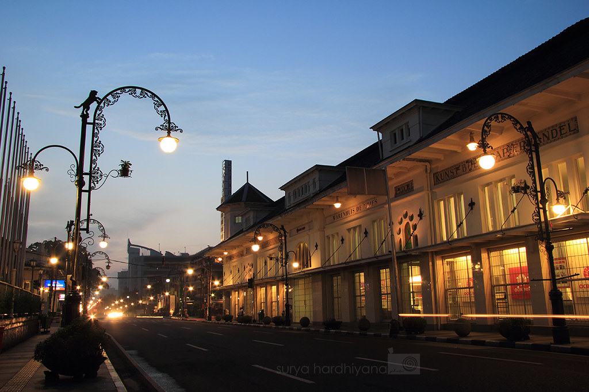
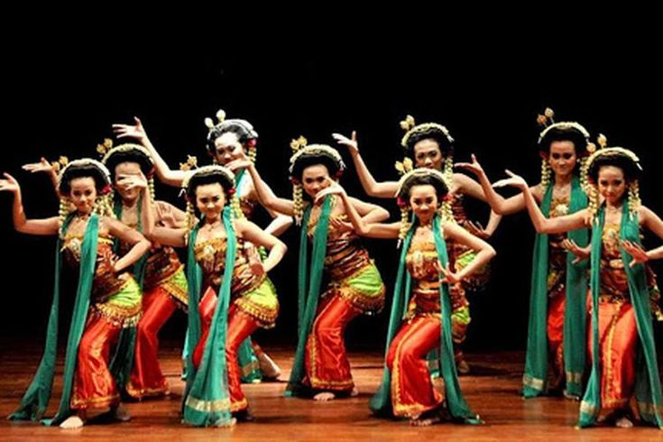
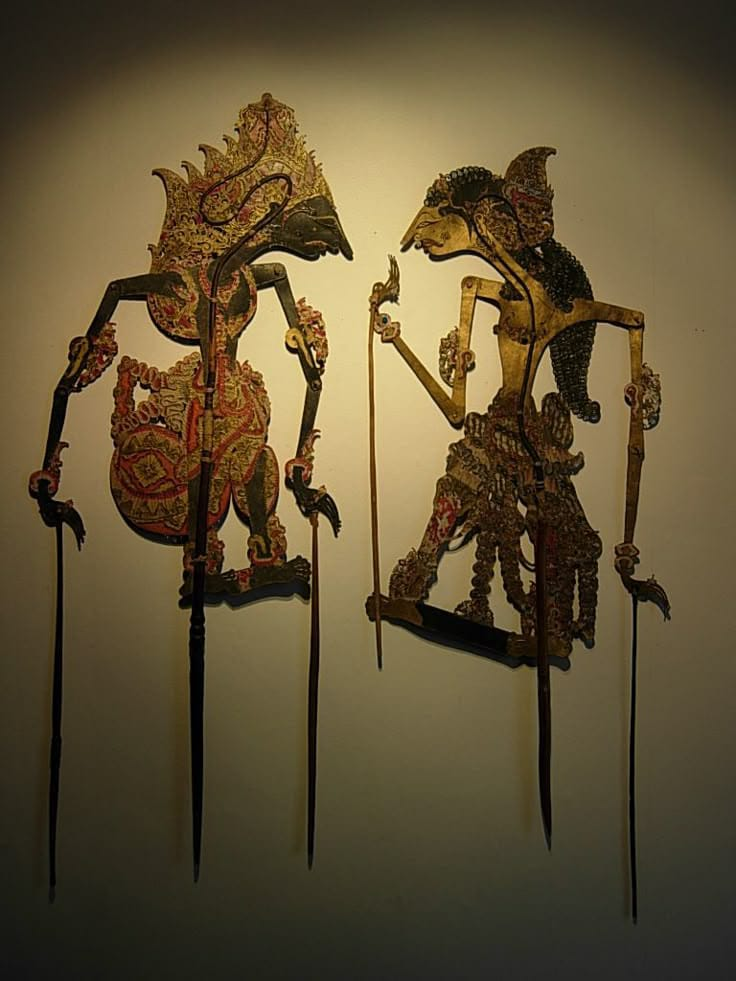
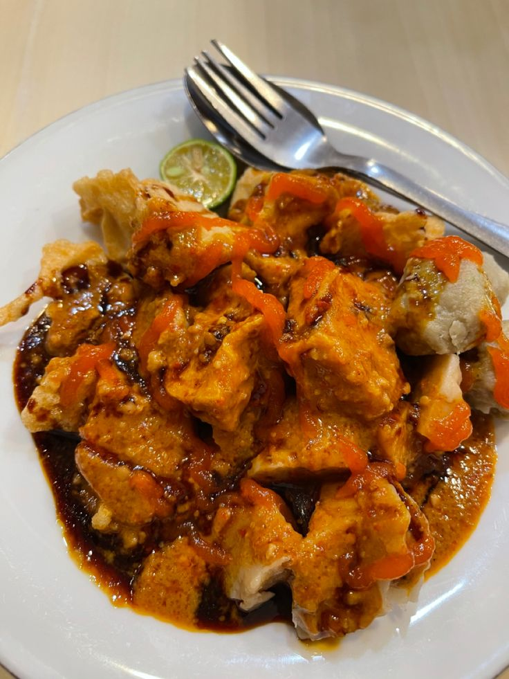
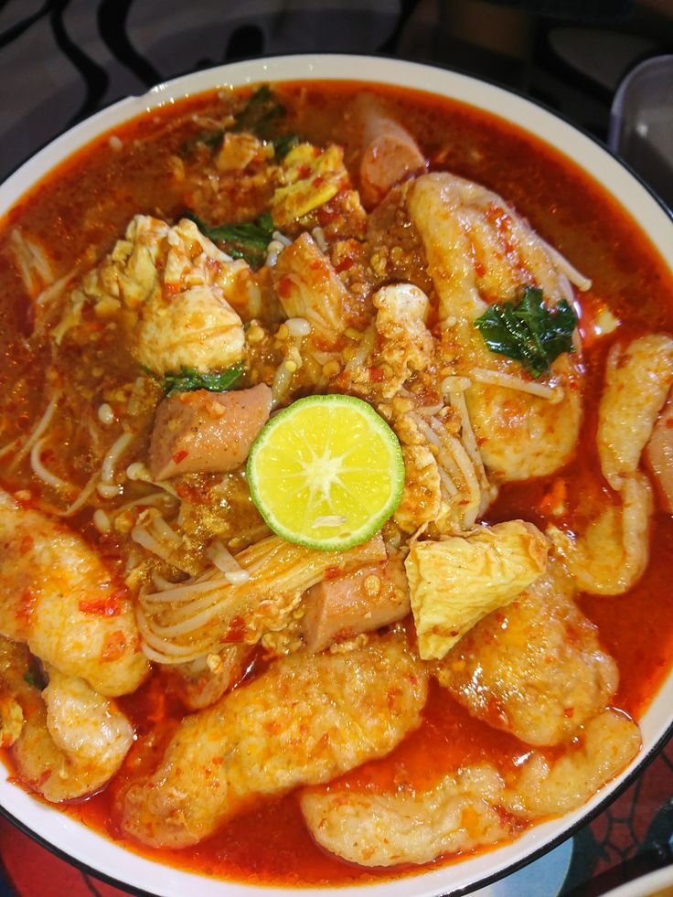
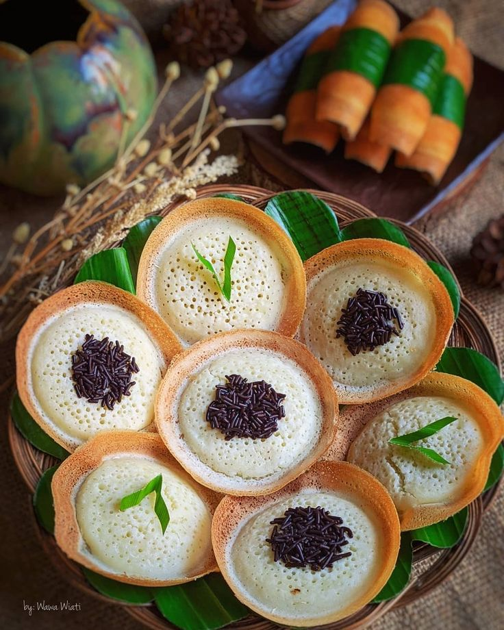
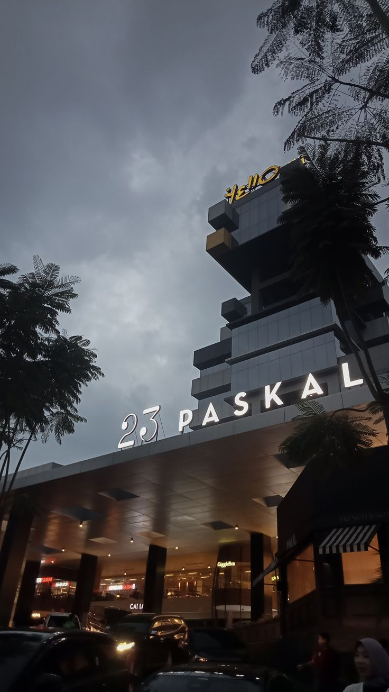
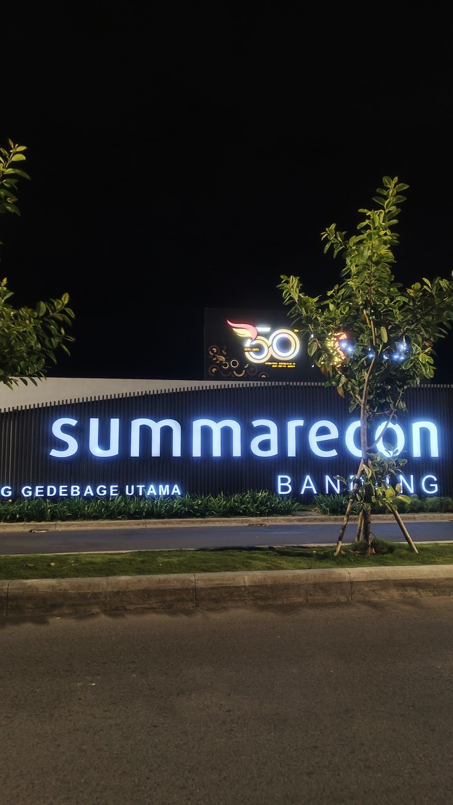
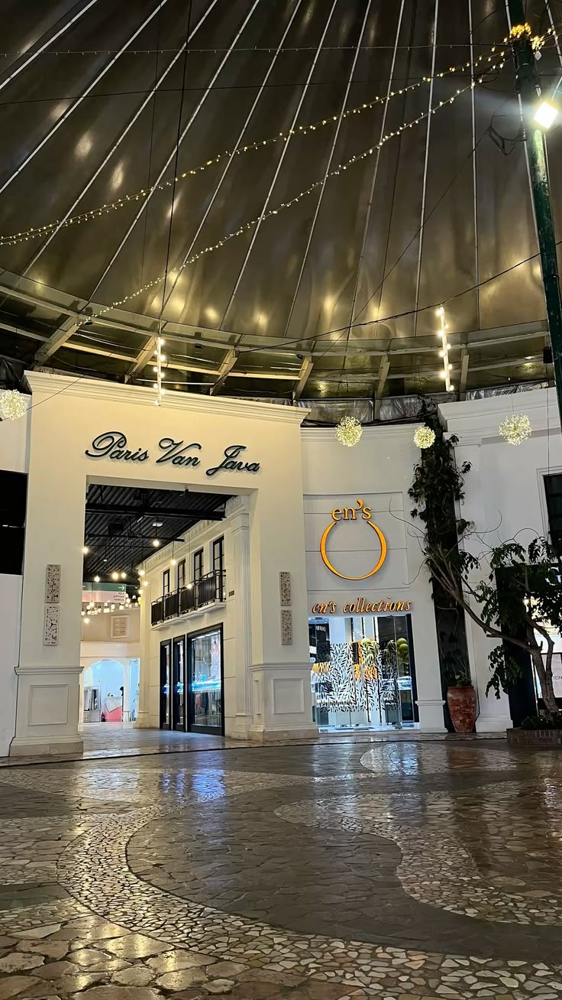
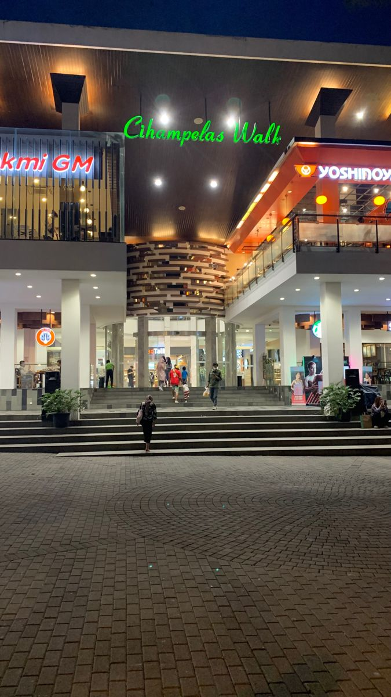

Bandung merupakan ibu kota Provinsi Jawa Barat. Kota ini dikenal sebagai salah satu kota besar di Indonesia yang memiliki keindahan alam, budaya yang beragam, serta berbagai tempat wisata yang menarik.
Bandung sering disebut sebagai Kota Kembang. Kota ini memiliki suasana yang khas dengan perpaduan antara bangunan bersejarah, perkembangan modern, lingkungan yang sejuk, dan kreativitas masyarakatnya.
Bandung juga terkenal sebagai kota pendidikan, kota kreatif, pusat kuliner, serta salah satu tujuan wisata favorit di Jawa Barat.
Kawah Putih merupakan kawasan wisata alam yang terkenal dengan danau kawahnya yang memiliki pemandangan indah.
Gunung Tangkuban Perahu merupakan salah satu destinasi wisata alam terkenal di kawasan Bandung dan sekitarnya.

Jalan Braga merupakan kawasan ikonik Bandung yang terkenal dengan suasana kota dan bangunan bersejarahnya.
Bandung memiliki budaya Sunda yang sangat kuat. Berbagai kesenian tradisional masih dilestarikan hingga sekarang.
Alat musik tradisional yang terbuat dari bambu dan dimainkan dengan cara digoyangkan.

Seni tari tradisional Jawa Barat yang memiliki gerakan dinamis dan khas.

Seni pertunjukan menggunakan boneka kayu yang menjadi bagian dari budaya Sunda.

Makanan khas Bandung yang biasanya disajikan dengan bumbu kacang.

Kuliner khas yang terkenal dengan cita rasa gurih dan pedas.

Makanan tradisional yang terbuat dari tepung beras dan memiliki berbagai macam varian rasa.




Nama: Kota Bandung
Provinsi: Jawa Barat
Julukan: Kota Kembang
Budaya: Sunda
Kuliner: Batagor, Seblak, Surabi, dan lainnya
Wisata: Alam, sejarah, budaya, dan kuliner